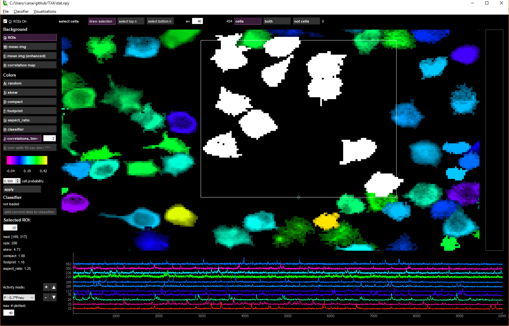
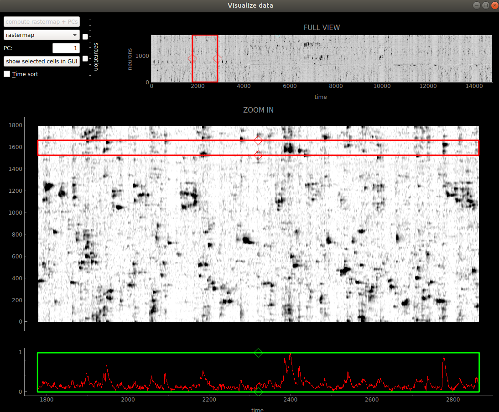
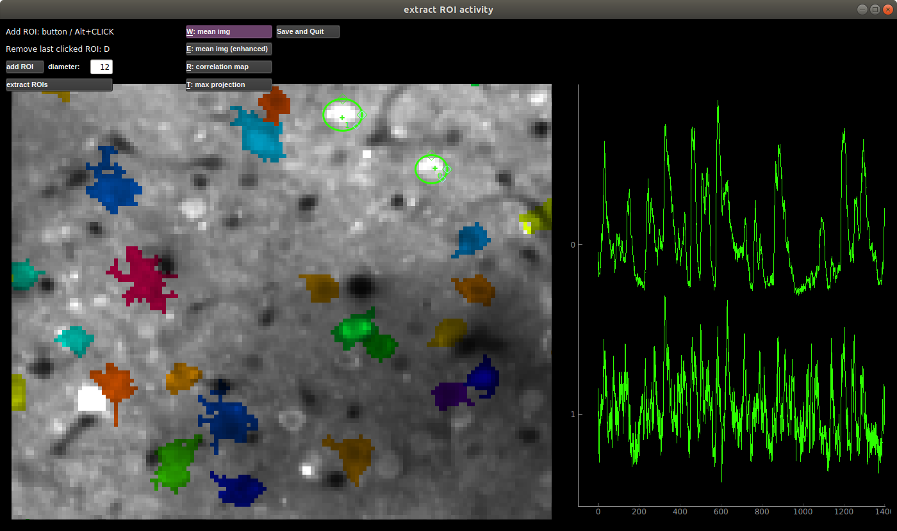

Using the GUI¶
Once you’ve run the processing, you can open the output stat.npy
file from the GUI. This allows you to explore the data in depth both
spatially and in time. In addition you can classify ROIs as ‘cells’ or
‘NOT cells’ (left or right side of screen) and train a classifier to
automatically identify the cells as one of these two classes. Note that
these categories do not have to be ‘cells’ and ‘NOT cells’, they could
be ‘boutons’ and ‘NOT boutons’, we just chose to say ‘cells’ because
that’s the most common ROI studied.
You can now drag and drop your stat.npy files into the GUI!
Different views and colors for ROI panels¶
Views¶
To turn off ROIs in views 2-4, uncheck ROIs on
ROIs: ROIs only are drawn
mean img: mean image is shown in background
mean img (enhanced): mean image filtered with a min-max filter shown in background
correlation map: map of correlated pixels shown in background
mean img (non-functional): the non-functional mean image shown in background (if nchannels=2)
Colors¶

Randomly colored ROI view is the default view. The ROIs in the random view are colored between purple and yellow, with red reserved for ROIs assigned to be RED based on the non-functional channel (you can change the threshold for calling a cell RED with the number next to the chan2 prob button). The other color views color the ROIs based on their statistics. The values of those statistics are shown in the colorbar below the buttons.
Here is more info about the less explanatory views:
Correlations¶
In correlation color view, the selected cell’s activity (or the mean of
the selected cells’ activities) is correlated with the activity of all
the other ROIs. The ROIs are colored according to these correlations.
The bin in which to compute the correlations can be chosen (in units of
frames). The default bin size is the number of frames per second
(ops['fs']).
If a 1D external variable is loaded, then the corr with 1D var button is activated. The cells are then colored according to their correlation with the external variable. The bin size is determined by the box next to the correlations button.
Correlations with 1D var¶
You can load an external stimulus or behavioral trace (1D) using “File - Load behavior or stim trace (1D only)”. The GUI expects a *.npy file that is the same length as the data in time (F.shape[1] from “F.npy”). You can then look at the correlation of each cell with this trace. And it will be plotted along with the cell traces if you select multiple cells or in the “Visualize” menu.
Rastermap / custom¶
Rastermap: Click ‘Visualize selected cells’ in the Visualizations menu and run rastermap on the cells. The selected cells (which could be all cells on LEFT or RIGHT) will then be colored based on their position in the rastermap.
Custom map: Use ‘Load custom hue’ in the Visualizations menu to load a *.npy file with the same number of values as ROIs (length of stat) and these values will become the hues of the cells (scaled to between 0 and 1) for the HSV map. If you do rastermap after this then the colors will change and vice versa this will overwrite the rastermap colors.
Buttons / shortcuts for cell selection¶
Mouse control¶
double left click = returns to full view in ALL PLOTS
left click = select cell
left click + CTRL = select multiple cells
left click + drag = moves field of view
right click = flip selected cell(s) from left<->right, – or if clicked in trace view, will open up “export” option
scroll wheel = zoom in and out
Keyboard shortcuts¶
Esc = returns to full view
Delete = removes box from draw selection from window For the letters, just press the letter (do not capitalize)
O = turn of ROIs in non-ROI view
Q-U = different views (can change saturation with slider)
A-M = different color maps
Left and right keys = cycle between cells of same panel
Up Key = flip selected cell to other panel
Alt+Enter = merge selected ROIs
note you can also ask the GUI to auto-suggest merges with the Merge>Auto-suggest merges window *
Multi-cell selection¶
You can select multiple cells by holding down CTRL while left-clicking on cells. If you are in ‘cells’ or ‘NOT cells’ view (not ‘both’ view), then several buttons for multi-cell selection activate.
{kind=link}
The draw selection button activates a box that you can drag and resize to select multiple cells. To delete the box, click the Delete key. select top n selects n=X top neurons from the current colormap. For instance, in ‘skew’ view, select top n will select the most skewed neurons. In ‘correlation’ view, it will choose the most correlated neurons with the currently selected neuron.
Trace view (bottom row)¶
When one cell is selected, the fluorescence, neuropil and deconvolved traces are shown for the chosen cell in the bottom row of the GUI. When multiple cells are selected, you can choose what type of traces to view with the drop-down menu in the lower left:
F: fluorescence
Fneu: neuropil fluorescence
F - 0.7*Fneu: corrected fluorescence
deconvolved: deconvolution of corrected fluorescence
You can resize the trace view with the triangle buttons (bigger = ▲, smaller = ▼). If multiple cells are selected, you can vary how much the traces overlap with the +/- buttons.
You can select as many cells as you want, but by default only 40 of those will be plotted. You can increase or decrease this number by changing the number in the box below max # plotted.
You can hide the fluorescence, neuropil and/or the deconvolved traces by toggling the chechboxes or using the keys as follows:
Deconvolved - N key Neuropil - B Key Fluorescence - V Key
Classifying cells¶
suite2p comes with a built-in classifier (based on our own manual curation of GCaMP6s imaging of cells in cortex). The default classifier is initialized as the built-in classifier, but can be modified by the user.
After running suite2p, the cells are automatically classified by the default classifier (at the time of running the pipeline), and these cell probabilities are shown as the colors in the classifier view. You can then further manually curate this data (flipping cells left and right depending on your criteria).
Adding data to a classifier¶
You can add this manually curated data to an already built classifier:
Load a classifier by going to the “Classifier” menu and clicking “Load”. Choose the default classifier, or load another classifier that you’ve built and saved with the from file option.
Click the add current data to classifier button. This will either overwrite the classifier file that is loaded, or you can specify a file location for the classifier with this newly added data.
Building your own classifier¶
Go to the “Classifier” menu and click “Build”. A window will pop up and
in the window you can add datasets as training samples for the
classifier. Click the Load iscell.npy button and add an iscell.npy
file. You can add as many as you like, then click build classifier,
and it will ask you to specify a file location for the new classifier.
Then you can load the classifier that you built into the GUI, or you can
save it as your default classifier.
Visualizing activity¶
Go to the “Visualizations” menu and click “Visualize selected cells”. If only one ROI is selected, then all ROIs in that view (cell or not cell) will be plotted. Otherwise the selected cells are plotted. You can sort the neurons by their principal component weights, or by our algorithm rastermap by clicking the compute buttons. Once you click the compute buttons, they will be grayed out, because you can’t compute them again (they won’t change). The plot below shows a mesoscope recording sorted by rastermap. You can change between sorting by rastermap and by the PCs by using the drop-down menu.
{kind=link}
The red box allows you to zoom in on specific segments of the recording. You can move it by dragging the mouse when in the box, or with the arrow keys. You can resize it by using the diamond handles on the sides of the box, or by holding down the shift key and using the arrow keys.
If you click the show selected cells in GUI button, then the cells surrounded by the red box will show up as white in the GUI.

Manual adding of ROIs¶
You can add ROIs in the File>Manual labelling. You MUST keep the binary file for the computing of the mask’s activity across time. When you save and exit the ROIs will be added to the *.npy files as the first N ROIs (where N is the number that you drew).
{kind=link}
View registered binary¶
Open the “Registration” menu and click “View registered binary”. A window will pop up with the binary file loaded (first row) along with the registration shifts (second row), and the fluorescence of a selected ROI (third row). If ops[‘keep_movie_raw’]=1, then both the unregistered and registered binaries will be shown in the first row. You can select an ROI by typing in the ROI number in the upper right.
You can zoom in and out on any of the plots. The shift plot and the fluorescence plot have linked x-axes. To return to full view, double-click on the plot that you want to recenter.
When not playing the movie, you can click on the shift plot and the fluorescence plot to go to a specific point in time in the movie. You can also seek through the movie by clicking the slide bar. The left and right arrow keys will move the slide bar incrementally. The space bar will pause and play the movie.

You can also view all the masks, and go from cell to cell by clicking on them.

Z-stack Alignment¶
You can also now load a Z-stack into this view. You can compute the z-position of the recording across time IF you keep the registered binary file. It expects the Z-stack to be a tiff with number of planes by number of pixels in Y by number of pixels in X. The results of the correlation between z-stack and each frame are saved in ops[‘zcorr’] which is number of planes (in Z) x number of frames. The GUI smooths this matrix across Z and then takes the max and plots the max across time in the third row.
View registration metrics¶
Open the “Registration” menu and click “View registration metrics”. A
window will pop up with ops[‘regDX’] and ops[‘regPC’] plotted. The
ops[‘regPC’]’s are computed by taking the principal components of the
registered movie. ops['regPC'][0,0,:,:] is the average of the top
500 frames of the 1st PC, ops['regPC'][1,0,:,:] is the average of
the bottom 500 frames of the 1st PC. ops['regDX'] quantifies the
movement in each PC (iPC) by registering ops['regPC'][0,iPC,:,:]
and ops['regPC'][1,iPC,:,:] to the reference images and computing
the registration shifts.
The first plot in the upper left shows the magnitude of the shifts (both
rigid and non-rigid) in the PCs (ops['regDX']). The second row of
plots are meant to help explore the direction of the PC. The first image
is the “difference” between the top and the bottom of the PC. The second
image is the “merged” image of the top and bottom of the PC. The third
image allows you to flip between the top and bottom PCs using the “play”
button.
The left and right arrow keys will change the PC number (or you can type in a number). The space bar will pause and play the movie.
The example below shows a movie that has been rigid registered but not non-rigid registered. The metrics suggest that non-rigid registration should also be performed on this recording.